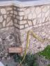
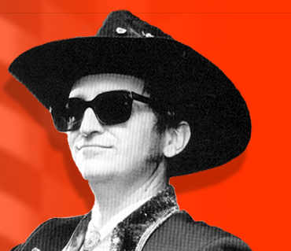

Aug 31 2006

TREMATE! TREMATE! STO PER TORNARE
Le mie ferie sono quasi finite, mi trovo ancora in vacanza… preparatevi, perche’ sta ARRIVANDO LA LAMENTAZIONE.
PROSSIMAMENTE, SU QUESTO BLOG.
ps: la scriverei ORA ma sono di passaggio.
Aug 31 2006
Le mie ferie sono quasi finite, mi trovo ancora in vacanza… preparatevi, perche’ sta ARRIVANDO LA LAMENTAZIONE.
PROSSIMAMENTE, SU QUESTO BLOG.
ps: la scriverei ORA ma sono di passaggio.
Aug 30 2006
Non auguro a nessuno, MAI, di percorrere la famigerata A4 Milano-Torino, in direzione Torino, con il sole delle 18:00 in faccia…
A prescindere che è un cantiere unico da oramai un quarto di secolo, sti cojoni hanno usato per cancellare le striscIe-bianche-vecchie della vernice nera LUCIDA, per disegnare le striscIe-gialle-nuove della vernice opaca.
Risultato, col sole in faccia, PORCODIO?
Che le striscIe-vecchie-bianche cancellate col sole riflesso ri-diventano bianche, quelle gialle-nuove-opache non si vedono.
In quei tratti dove ci sono i sensi alternati divisi dai birilli, dove i camii si sfiorano a 90 all’ora, cosa porcaMadonna volete che si capisca dove bisogna stare?
Poi ti mettono 75 Km di “Autostrage” da percorrere a 60 Km/h?? E quando mi passa stò strazio? Quando poi ci saranno i “Pentolini” che sfrecceranno a lato a 274 Km/h vedremo quanta gente andrà a sbattere: “Guarda il trenino! CiùCiù”
PORCODIO, porco!
In più, dato che la Stronza (La Mamma del Fetente, N.d.r.) è molto tale, in questo periodo ci mette pure l’allergia all’ambroGGia, che aiuta a tenere gli occhi aperti, nò!?!
Ma vaffanculo và…
Aug 30 2006
Io detesto molte delle software house che fanno videogiochi, ma mai come in questi attimi sto odiando quelli che hanno fatto castlevania DOWN of sorrow. Un platform vecchio stile, di quelli che ti ci rodi il BUDELLO per quanto e’ difficile, con quella logica DATATA e ORRENDA di ricreare i nemici ogni volta che rientri in una stanza, con quei momenti in cui lo schermo e’ talmente pieno di nemici da pensare che FORSE si sono sbagliati i cari programmatori. Un gioco dove puoi salvare SOLO quando lo dicono loro, dove NON trovi energia in giro, dove non ci sono livelli ma un grande SPAZIO esplorabile, che secondo loro sono cosi’ TORDO da farmi venti stanze piene di stronzi per prendere un merdoso power up, con quei mostri difficilissimi, ma soprattutto con il fatto che SE MUORI, e’ direttamente GAME OVER + titoli di inizio, VAFFANCULO KONAMI, non mi potevate mettere un CONTINUE, NO. Schermata di inizio, carica, bestemmia il santo budello. VAI A CAGARE, AMICO DI DRACULA.
Aug 26 2006
Devo lamentarmi… DEVO..
Fottutimafiosicoglioniscienziatiindolentimangioni
nordafricaniamorevoligentilidiclassefancazzistiforzitalioti

Ho letto sul muro di un bar “Se il padreterno ti vuole fottere ti fa nascere in sicilia, se ti vuole catastrafottere ti fa nascere in provincia di Trapani”
Avete la terra piu’ bella del mondo, influenze millenarie, risorse infinite, gente incredibile… e stiamo ancora qui??
Ancora la trinacria non DOMINA il mondo con un seggio permanente al consiglio di sicurezza dell’ONU?
Perche’ non siete una potenza militare o la piu’ grande nazione di interposizione pacifica e neutrale (la svizzera del mediterraneo).
gia’, perche’ mediterraneo significa mare nel mezzo delle terre, e la sicilia e’ nel mezzo di questo mare.
questo e’ il Vostro Mare,
Siete il culo del mondo e potrete esserne la minchia.
Rabbia, lamento e frustrazione. Gioia energia e carica.
Aug 25 2006
Che BELLO dare un servizio INUTILE come IPV6, dare delle POLICY INUTILI come quelle di SIXXS e vedersi segare gli account CONSIDERANDO L’UNICA COSA UTILIZZABILE PER IPV6 COME UN ABUSO. CHE BELLO CHE TI SEGANO L’ACCOUNT SENZA AVVERTIRTI. CHE BELLO CHE PRESTO ESPLODERETE IN UN BUBBONE ORRIFICO DI SMEGMA E UMORI ANALI.
Aug 24 2006
Dopo l’ennesimo errore durante emerge sync, dovuto principalmente che non aggiorno gentoo da quasi un anno,
ho ufficialmente constatato, riconosciuto e documentato che

mi
sono
ROTTO
I
COGLIONI
Basta. Basta C0d3rz tr3d1c3nn1 3l33tZ che fanno a gara per modificare emerge install in emerge –install, oppure /etc/hostname in /ec/conf.d/hostname, mentre l’intero sistema del portage di gentoo sembra scritto da apocalittici STRONZI DI MERDA, senza alcun criterio, e con un mare di merdate dentro
(che poi, se vogliamo dirla tutta, che senso ha REINVENTARSI LA RUOTA di un sistema di portage con script in python delle mie PALLE PITONATE, quando da ANNI ESISTE il ben noto e funzionale sistema usato dai BSD?)
NO GRAZIE, HO ALTRO DA FARE
Devo PORTARE A SPASSO IL CANE, non IMPAZIRE per installare un cazzo di driver per il TOUCHPAD, cosa che dovrebbe essere automatica e trasparente all’utente
devo FARE IL BUCATO, CUCINARE, SISTEMARE CASA, e non diventare CRETINO perche’ l’accelerazione GRAN-FICA, il DRI, IL GLX o COME CAZZO SI CHIAMA non FUNZIONA AUTOMATICAMENTE come invece accade in CENTOMILA ALTRE DISTRO LINUX
voglio andare PER BOSCHI, fare IL BAGNO NEL FIUME, con la mia ragazza, con i miei cani, raccogliere le erbe, farmi un buon te’ la sera, guardarmi un film, non DIVENTARE PAZZO E GOBBO PERCHE’ OPENSSH NON SI COMPILA E RSYNC SCLERA PERCHE’ LA VERSIONE NON E’ AGGIORNATA
io voglio tornare ad esercitarmi CON LA CHITARRA ELETTRICA, voglio INCIDERE LA MIA MUSICA, SUONARE, registrare UN NUOVO DEMO, non PERDERE IL SENNO DIETRO A STO CAZZO DI EMERGE SYNC, CHE SI BLOCCA CON ERRORI ORRENDI se non aggiorno sta merda di gentoo ogni 3 giorni, porco ddio
voglio GUARDARE LA TV, voglio DORMIRE, SCOPARE, ANDARE IN MONTAGNA, voglio andare a fare SHOPPING, girare col CAMPER, IN VACANZA, non dover PIANGERE LACRIME DI SANGUE E SBORRA perche’ una mattina JORGHE PALLE INCULAMORTENSEN, frocetto t33n super-3l33tz norvegese di 12 anni si e’ svegliato nella notte senza buio della sua TERRA BASTARDA con la CAZZO DI IDEA che mi deve cambiare tutto il layout degli headers di XORG-ASM di MMERDA o che nelle GTK DEL CAZZO shift+enter e’ DIVERSO da ENTER, costringendomi ad una serie BESTIALE di AGGIORNAMENTI NON RICHIESTI
Io voglio andare in giro a SCATtare FOTTO-GRAN-FICHE, voglio poter tornare a casa, prendere un cazzo di cavetto, ficcarlo tra PC e MACCHINA FOTTO-GRAN-FICA e VEDERE LE FOTO GIA’ SUL DESKTOP, non dover diventare CRETINO ED IMBECILLE, fare su root, fare il MOUNT DELLA DIR A MANO, entrare nelle fottute dir, fare il CP dei files, cancellarli dalla macchina, cambiare i permessi e darli all’utente, PORCO DDIO, SIAMO NEL DUEMILA E SEI, PORCO CRISTO, NON NEI FOTTUTI ANNI 70 PEACE LOVE AND ROCK&ROLL MAKE LOVE NOT WAR GO GET BEND TAKE A COCK IN YO ASS UGLY MOTHAFUCKA SONOFABITCH
IO VOGLIO VIVERE
VOGLIO AVERE PIU’ TEMPO PER VIVERE
ecco perche’, consapevolmente, faccio un backup, BRASO TUTTO, ed installo XUBUNTU, W I NEGRI
ADDIO PER SEMPRE
E’ FINITA
Aug 23 2006
Quando una cosa tanto OVVIA come la gestione del mousepad, una cosa che dovrebbe essere TRASPARENTE ALL’UTENTE, una cosa che universalmente, da quando la xerox ha inventato i sistemi a finestre, si PRESUME CHE DEBBA FUNZIONARE SENZA ALCUN INTERVENTO DELL’UTENTE
quando una cosa del genere, che su qualsiasi sistema operativo SEMPLICEMENTE FUNZIONA, SENZA FARE NIENTE
quando questa cosa che PERSINO SOTTO QNX FUNZIONA A MERAVIGLIA, INVECE SOTTO LINUX MERDA DI GNU MERDA DI STALLMAN DI MERDA TI FA PERDERE UN INTERO POMERIGGIO BUTTATO ACCANTO ALLA GENTOO MASSACRATA, CON IL SUO MOUSE DIGRIGNATO VOLTO AL PLENILUNIO,
HO SCRITTO PAROLE PIENE DI ORRORE
non e’ possibile che siamo nel duemila e sei, NEL TERZO MILLENNIO, e configurare UNO STRACAZZO DI MOUSE DI MERDA, UN TAPPETINO DEL CAZZO, UN TOUCHPAD DEI MIEI COGLIONI sotto una merda di interfaccia GRAN-FICA di X-ORGASM di MMERDA ti faccia perdere UN INTERO POMERIGGIO, e ancora non si capisce UN CAZZO DI COME SETTARE LE COSE
il mondo sta andando a puttane, c’e’ qualcosa che non va, occorre fermarsi e riflettere
altro che free software, altro che gniu’ e linucs
dovete morire tutti, frocetti teen programmatori del cazzo, porco il *vostro DIO*
Aug 23 2006
Cose per cui gli sviluppatori dovrebbero MORIRE:
gemini etc # emerge sync
*** Deprecated use of action 'sync', use '--sync' instead
Evidentemente, NON GLI PIACEVA avere la facilita’ e comodita’ di scrivere, peraltro da ANNI, semplicemente emerge sync. NO, E’ IMPORTANTE MODIFICARE QUESTA COSA, AGGIUNGIAMO 2 SIMBOLI “-” DAI
DOVETE MORIRE, DOVETE MORIRE